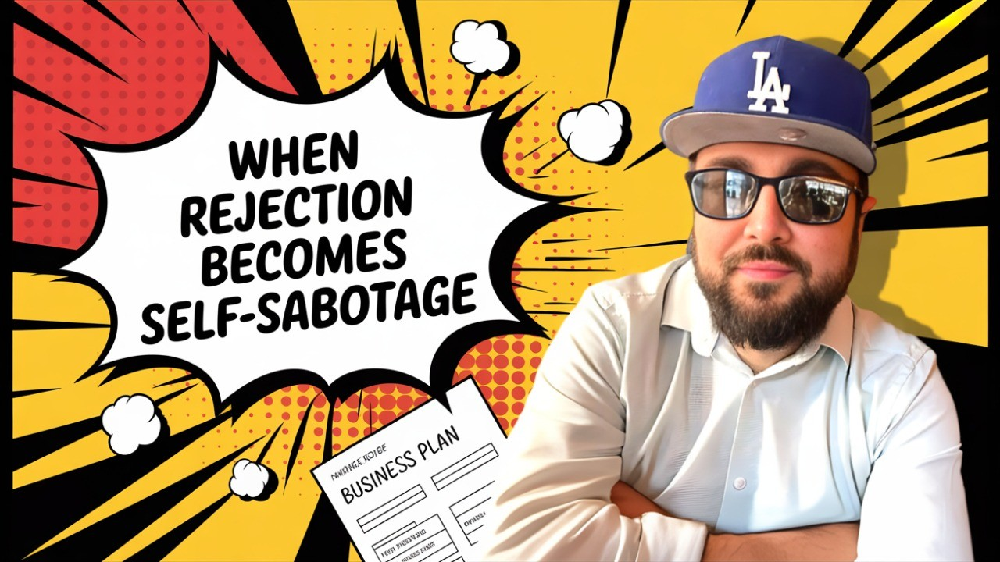
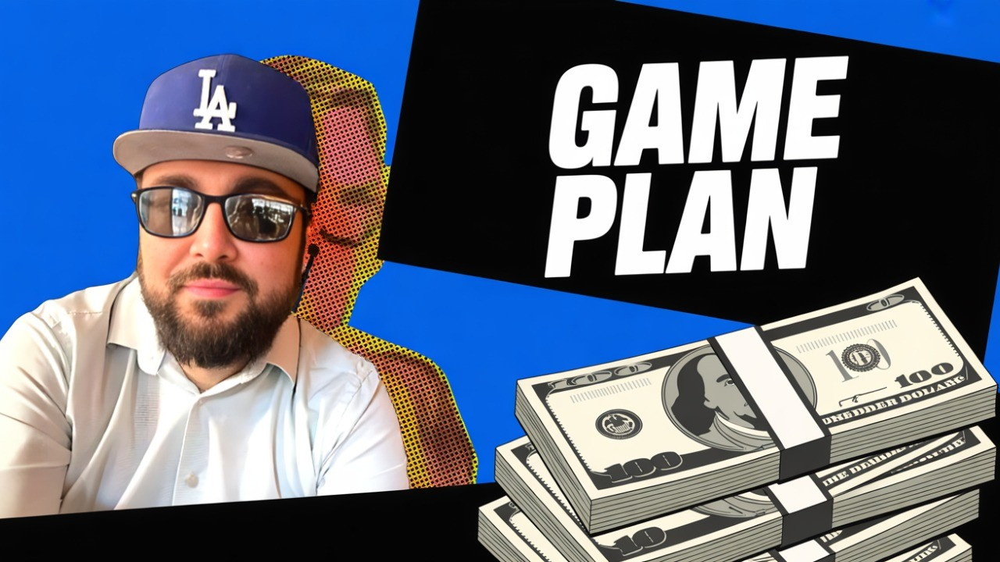
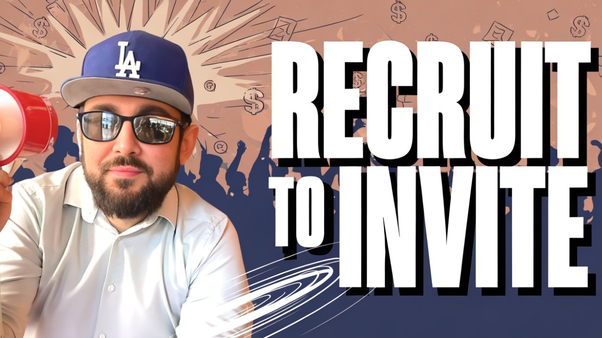

Your Funding Agency Just Got Two AI Employees
Two AI outreach agents support client acquisition and broker recruitment while human operators retain oversight.
READ EDITION ↗The LinkedIn newsletter archive and companion implementation guides.
17 records
Two AI outreach agents support client acquisition and broker recruitment while human operators retain oversight.
READ EDITION ↗Argues that a broker’s professional identity shapes follow-up, persistence, and execution more than access to additional leads.
READ EDITION ↗Explains how local visibility, bank relationships, and practical resources can position a funding broker as a trusted community contact.
READ EDITION ↗Reviews DAC updates, broker messaging, gym-owner outreach, training, and the activity checklist presented in the January update.
READ EDITION ↗Discusses patient agency building, training, team development, and the Spanish-language funding opportunity described in the source update.
READ EDITION ↗Presents onboarding, weekly activity, follow-up, and coaching structures intended to help brokers turn goals into consistent execution.
READ EDITION ↗
Edition 11 · 2025-06-18 · 6 MINExplores separating personal identity from sales rejection and proposes daily practices for continuing outreach after an unwelcome response.
READ EDITION ↗ Edition 10 · 2025-06-17 · 6 MIN
Edition 10 · 2025-06-17 · 6 MINDiscusses the author’s framing of physical stress around rejection and offers exercises intended to make outreach feel less threatening.
READ EDITION ↗Examines how fear of rejection can affect outreach and follow-up, and urges readers to separate business responses from self-worth.
READ EDITION ↗
Edition 08 · 2025-05-30 · 5 MINTranslates an agent training session into an activity-focused plan for starting a funding business and connecting with potential customers.
READ EDITION ↗ Edition 07 · 2025-05-28 · 26 MIN
Edition 07 · 2025-05-28 · 26 MINUses the lampstand metaphor to discuss visible leadership, ethical service, recruitment, and building a team around a shared mission.
READ EDITION ↗ Edition 06 · 2025-05-21 · 6 MIN
Edition 06 · 2025-05-21 · 6 MINSummarizes a training session on finding local prospects through coupon advertisers, targeted industries, and direct business outreach.
READ EDITION ↗ Edition 05 · 2025-05-20 · 25 MIN
Edition 05 · 2025-05-20 · 25 MINDiscusses leadership standards, protecting time, developing agents, and creating systems and a culture that other team members can repeat.
READ EDITION ↗ Edition 04 · 2025-05-17 · 20 MIN
Edition 04 · 2025-05-17 · 20 MINEncourages entrepreneurs to focus on certification, conversations, referrals, activity tracking, and team development in a funding business.
READ EDITION ↗
Edition 03 · 2025-05-14 · 22 MINExplains a recruitment approach built around invitations, authentic conversations, training events, and repeatable team-building activity.
READ EDITION ↗ Edition 02 · 2025-05-13 · 27 MIN
Edition 02 · 2025-05-13 · 27 MINConnects visible leadership, focused execution, product positioning, and duplication with the development of a funding agency’s sales culture.
READ EDITION ↗Introduces the newsletter’s audience, its original weekday content schedule, and routes for exploring a business funding agency.
READ EDITION ↗Read the LinkedIn newsletter and follow future editions.
OPEN ↗Edition 17 · Published 2026-11-25Two AI outreach agents support client acquisition and broker recruitment while human operators retain oversight.
COMPANION ↗In production · companion roadmapChoose a business model, create the intake path, connect partner routes and add useful AI assistance. Article in production; no publication URL yet.
COMPANION ↗External application availability and features may change. Educational resources are not funding offers or guaranteed outcomes.
The idea and editorial context.
The linked checklist, template or workflow.
OPEN ↗03 / IMPROVEA clear output and a next iteration.
OPEN ↗